+ Serviços de
Segurança do Trabalho
▶PPRA
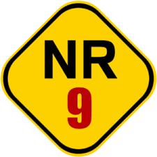▶PPRA - Programa de Prevenção de Riscos Ambientais (PPRA), é um
conjunto de diretrizes e ações que visam identificar,avaliar e controlar
os riscos presentes no ambiente de trabalho.
✓ Objetivos:
• Identificar riscos ambientais.
• Avaliar e controlar riscos.
•Promover a saúde e segurança.
▶PGR
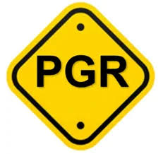▶PGR - O Programa de Gerenciamento de Riscos (PGR), é um conjunto de ações e procedimentos adotados pelas organizações para identificar, avaliar, controlar e monitorar os riscos presentes no ambiente de trabalho.
✓Objetivos:
• O objetivo principal do PGR é garantir condições de trabalho seguras e
saudáveis para todos os colaboradores.
▶LTCAT
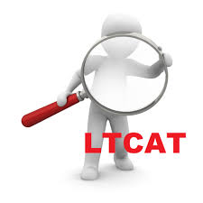▶LTCAT- (Laudo Técnico das Condições Ambientais do Trabalho) é um
documento técnico elaborado por um profissional habilitado, como um
engenheiro de segurança do trabalho ou médico do trabalho.
O LTCAT é obrigatório para todas as empresas e deve ser atualizado
sempre que houver mudanças significativas nos processos de trabalho.
▶PCMAT
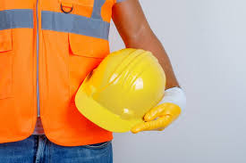▶PCMAT - O PCMAT(Programa de Condições e Meio Ambiente de Trabalho) é
um documento essencial no setor da construção civil, regulamentado pela
Norma Regulamentadora 18 (NR 18).
O PCMAT é obrigatório para empresas que empregam 20 ou mais
trabalhadores no setor da construção civil e deve ser atualizado
periodicamente para garantir sua eficácia.
▶PCMSO
▶PCMSO - O PCMSO (Programa de Controle Médico de Saúde Ocupacional) é
um programa essencial para a preservação da saúde dos trabalhadores em
relação aos riscos ocupacionais.
Ele é regulamentado pela Norma
Regulamentadora 7 (NR 7) e tem como objetivo principal prevenir e
rastrear agravos à saúde relacionados ao trabalho
▶LICENCIAMENTO AMBIENTAL
▶LICENCIAMENTO AMBIENTAL - O Licenciamento Ambiental é um procedimento administrativo fundamental que visa controlar e regular as atividades potencialmente poluidoras ou causadoras de degradação ambiental. Instituído pela Lei nº 6.938/81, que criou a Política Nacional do Meio Ambiente no Brasil, esse procedimento é executado pelos órgãos ambientais competentes, em âmbito federal, estadual e municipal.
▶PEA
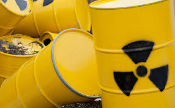▶PEA - O Plano de Emergência Ambiental (PEA) é um documento que
descreve as orientações e procedimentos a serem seguidos em caso de
emergências ambientai.
O PEA é um componente crucial para garantir que as empresas estejam
preparadas para lidar com emergências ambientais de forma eficaz e
responsável.
▶ O.S
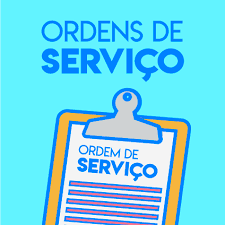▶O.S Ordem de Serviço:
(N.R 01) - No ato da contratação antes de iniciar as atividades através da OS ordem de serviço os profissionais são treinados, capacitados e alertados sobre todos os riscos dentro do setor de trabalho e meios de prevenção e
medidas de controles existentes para a proteção.
.
▶A.P.R- ANÁLISE PRELIMINAR DE RISCO
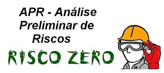▶A.P.R- ANÁLISE PRELIMINAR DE RISCO - O objetivo é atribuir soluções de prevenção, atenuação ou neutralização dos riscos antes e/ou durante a execução da atividade pelo trabalhador. A APR é uma ferramenta indispensável para verificação prévia dos riscos que envolvem as atividades.
▶P.T- PERMISSÃO DE TRABALHO
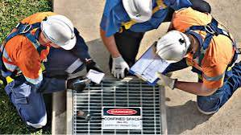▶P.T- PERMISSÃO DE TRABALHO - A permissão de trabalho garantirá uma checagem dos requisitos básicos e dos Equipamentos de Proteção Individual – EPI inerentes a uma atividade de risco.
▶N.R 31- COMISSÃO INTERNA DE PREVENÇÃO DE ACIDENTE RURAL – CIPATR
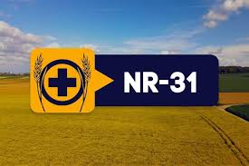▶N.R 31 - Define o que pode ser considerado como grave e iminente RISCO NUMA OBRA, e como deve ser feito o embargo ou interdição.
▶N.R 05- COMISSÃO INTERNA DE PREVENÇÃO DE ACIDENTES – CIPA
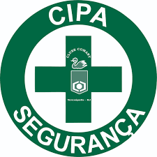N.R 05- COMISSÃO INTERNA DE PREVENÇÃO DE ACIDENTES – CIPA - É ela quem diz qual deve ser o tamanho da comissão, qual é a duração dos mandatos, quem pode
participar.
▶N.R 06 - EQUIPAMENTOS DE PROTEÇÃO INDIVIDUAL – EPI

▶N.R 06 - EQUIPAMENTOS DE PROTEÇÃO INDIVIDUAL – EPI
Estabelece o uso de Equipamento de Proteção Individual (EPI), de modo que o trabalhador esteja
com equipamento seguro e confortável para realizar as atividades do dia sem
correr riscos.
▶N.R 10 - SEGURANÇA EM INSTALAÇÕES E SERVIÇOS EM ELETRICIDADE
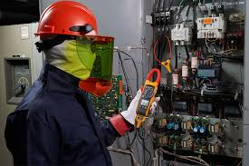▶N.R 10 - SEGURANÇA EM INSTALAÇÕES E SERVIÇOS EM ELETRICIDADE -
Garante a segurança e a saúde dos trabalhadores que atuam nas
instalações e serviços com eletricidade.
▶N.R 11
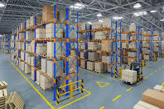▶N.R 11- TRANSPORTE, ARMAZENAGEM E MANUSEIO DE MATERIAIS -
Estabelece medidas de segurança para o trabalho dos funcionários em
transporte, armazenamento e manuseio de materiais e cargas com o
objetivo de reduzir o número de acidentes no ambiente de
trabalho.(treinamento).
▶N.R 12 - SEGURANÇA NO TRABALHO EM MÁQUINAS E EQUIPAMENTOS
▶N.R 12 - SEGURANÇA NO TRABALHO EM MÁQUINAS E EQUIPAMENTOS - Previne acidentes e doenças ocupacionais durante o uso de máquinas e equipamentos. Ela
determina como deve ocorrer a fabricação, a comercialização, a limpeza e o transporte desses equipamentos utilizados pelo trabalhador.
.(treinamento).
▶NR 13 - CALDEIRAS E VASO S DE PRESSÃO
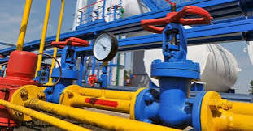▶NR 13 - CALDEIRAS E VASO S DE PRESSÃO - Segurança em Caldeiras, Vasos de pressão, tubulação e tanques no que diz respeito a classificação, instalação, inspeção e capacitação dos trabalhadores para operar uma caldeira e sistemas pressurizados. Explica como classificar, quais são as categorias tanto para caldeiras como para vasos de pressão, quais critérios para instalação, para inspeção e
capacitação de trabalhadores. (treinamento).
▶N.R 18 - CONDIÇÕES E MEIO AMBIENTE DE TRABALHO NA INDÚSTRIA DA CONSTRUÇÃO
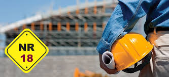N.R 18 - CONDIÇÕES E MEIO AMBIENTE DE TRABALHO NA INDÚSTRIA DA
CONSTRUÇÃO -
Além de passar as informações e normas da empresa ela
regulamenta as condições e meio ambiente de trabalho na indústria da
construção. Tem como objetivo principal a normatização da boa prática do
trabalho com segurança, no respeito ao trabalhador da indústria da
construção, na preservação da vida saudável no trabalho. (treinamento).
▶N.R 20 - LÍQUIDOS COMBUSTÍVEIS E INFLAMÁVEIS
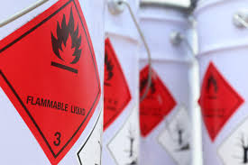▶N.R 20 - LÍQUIDOS COMBUSTÍVEIS E INFLAMÁVEIS - O objetivo principal
da norma está na segurança e saúde das pessoas envolvidas com
inflamáveis (gases e líquidos) e combustíveis (líquidos) em todo ciclo
de vida da instalação, iniciando pelo projeto, construção, manutenção
operação, até a desativação, abrangendo a extração, produção,
armazenamento, transferência, manuseio e manipulação. (treinamento).
▶N.R 22 - SEGURANÇA E SAÚDE OCUPACIONAL NA MINERAÇÃO – CIPAMIN
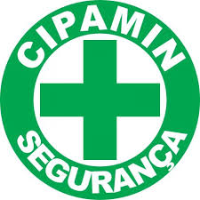▶N.R 22 - SEGURANÇA E SAÚDE OCUPACIONAL NA MINERAÇÃO – CIPAMIN - Promove ações preventivas e reduzir os riscos de acidentes lesões e mortes no setor da mineração,
como qualquer outra NR conta com diversos itens a serem averiguados dentro dos
ambientes de trabalho para que os riscos possam ser evitados ou amenizados.
(treinamento).
▶N.R 23 - PROTEÇÃO CONTRA INCÊNDIO (TREINAMENTO PARA FORMAÇÃO OU RECICLAGEM DE BRIGADISTAS)
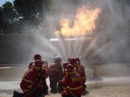▶N.R 23 - PROTEÇÃO CONTRA INCÊNDIO (TREINAMENTO PARA FORMAÇÃO OU
RECICLAGEM DE BRIGADISTAS) - Norma regulamentadora que visa determinar
quais são as medidas de proteção e combate a incêndios a serem adotadas
pelas empresas em todos os casos. Ela traz uma série de disposições que
orienta o que deve ser feito para proteger os colaboradores e o
patrimônio emcaso de incêndio. (treinamento).
▶N.R 29 - SEGURANÇA E SAÚDE NO TRABALHO PORTUÁRIO
▶N.R 29 - SEGURANÇA E SAÚDE NO TRABALHO PORTUÁRIO - Aplicam aos trabalhadores portuários em operações, como aos demais que exerçam
atividades nos portos assim trabalhadores organizados e instalações portuárias de uso privativo e retro portuárias, situadas dentro
ou fora do porto organizado. (treinamento).
▶RETROESCAVADEIRA:
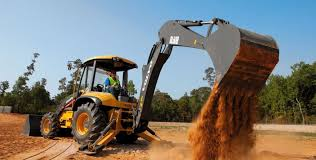▶Treinamento para retroescavadeira -
🔧Capacite sua Equipe: Eleve o nível do seu time com operadores de retroescavadeira treinados e certificados. Nossa formação garante eficiência e segurança nos canteiros de obras. (treinamento).
▶N.R 34 - CONDIÇÕES E MEIO AMBIENTE DE TRABALHO NA INDÚSTRIA NAVAL
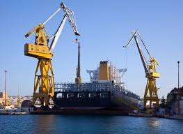▶N.R 34 - CONDIÇÕES E MEIO AMBIENTE DE TRABALHO NA INDÚSTRIA NAVAL - Estabelece medidas de segurança e saúde para trabalho a quente, trabalho em atura, trabalho com exposição a radiações ionizantes trabalhos de jateamento e hidrojateamento , atividades de
pintura, movimentação de cargas, montagem e desmontagem de andaimes
equipamentos portáteis, instalações elétricas. (treinamento).
▶N.R 35 - TRABALHO EM ALTURA
▶N.R 35 - TRABALHO EM ALTURA - Aborda sobre o trabalho em altura.
Ensina o uso adequado de EPI e EPC. Trabalhar em locais altos, sem
equipamentos de segurança que mantenham o trabalhador preso em caso de
queda ou sem um treinamento que evidencie a conduta adequada, viola os
princípios de segurança no trabalho. (treinamento).
▶N.R 33- SEGURANÇA E SAÚDE NO TRABALHO EM ESPAÇOS CONFINADOS
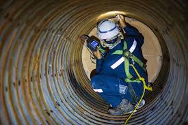▶N.R 33- SEGURANÇA E SAÚDE NO TRABALHO EM ESPAÇOS CONFINADOS -
Estabelecer os requisitos mínimos para identificação de espaços
confinados e o reconhecimento, avaliação, monitoramento e controle dos
riscos existentes, de forma a garantir permanentemente a segurança e
saúde dos trabalhadores que interagem direta ou indiretamente nestes
espaços”. (treinamento).
▶PPR
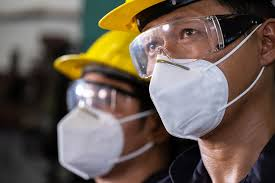▶ PPR – Programa de Proteção Respiratória
O Programa de Proteção Respiratória (PPR) é um conjunto de medidas e procedimentos destinados a proteger os trabalhadores contra a inalação de substâncias nocivas no ambiente de trabalho
▶PAE - Plano de Atendimento a Emergência

▶ (PAE) é um documento essencial que detalha os procedimentos a serem
seguidos em caso de emergência.
projetado para garantir respostas rápidas e seguras, minimizando danos a
pessoas, propriedades e ao meio ambiente.
▶PCA - Programa de Conservação Auditiva
▶ O Programa de Conservação Auditiva (PCA) é um conjunto de
medidas e ações destinadas a proteger a audição dos trabalhadores
expostos a níveis elevados de ruído no ambiente de trabalho.
O PCA faz parte do Programa de Controle Médico de Saúde Ocupacional
(PCMSO) e visa prevenir a Perda Auditiva Induzida por Níveis de Pressão
Sonora Elevados.
▶Programa de Boas Práticas
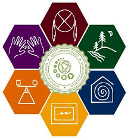▶ O Programa de Boas Práticas é uma iniciativa que visa promover
padrões elevados de qualidade e segurança em diversos setores, como
saúde, alimentação e manufatura. Esses programas são desenvolvidos para
garantir que as organizações sigam práticas recomendadas e
regulamentações para proteger a saúde e a segurança dos consumidores e
trabalhadores.
▶Programa PAZ- Acidente Zero
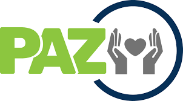▶ O Programa Acidente Zero (PAZ) é uma iniciativa focada em reduzir acidentes de trabalho e melhorar a segurança no ambiente de trabalho. Ele envolve uma série de práticas e procedimentos para prevenir acidentes e promover um ambiente de trabalho mais seguro.
▶Programas de Ergonomias
( Laudos ergonômicos)
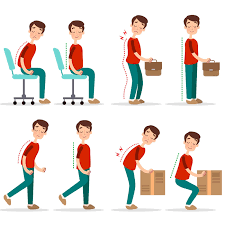
▶ Programas de Ergonomia são iniciativas que visam otimizar o
ambiente de trabalho para melhorar o conforto, a segurança e a
eficiência dos trabalhadores. Eles são fundamentados na ciência da
ergonomia, que estuda a interação entre os trabalhadores e seu ambiente,
buscando adaptar o ambiente às características psicofisiológicas dos
indivíduos.
▶Entre outros Serviços que forem solicitados.
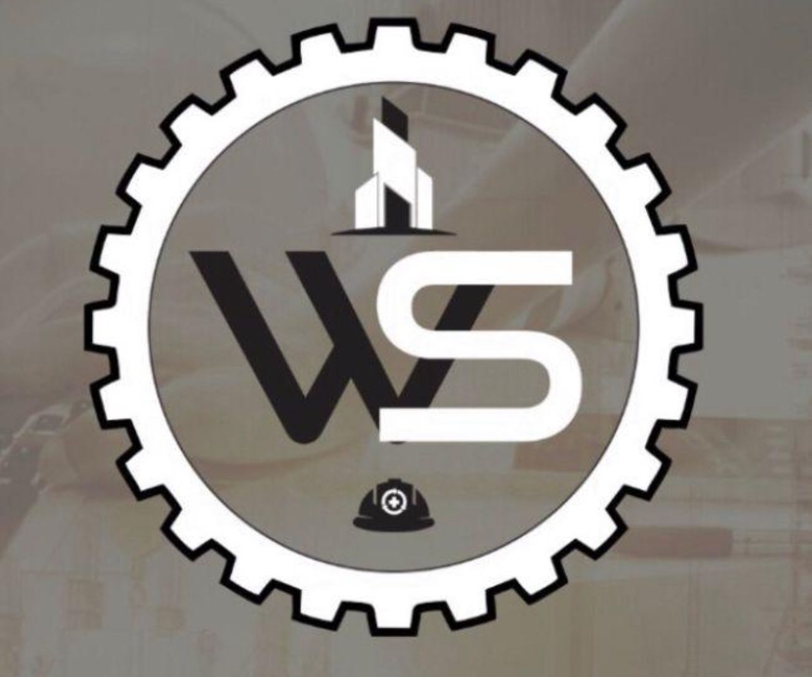▶ Sempre Trabalhando para oferecer Soluções inovadoras para o seu
negócio!